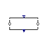
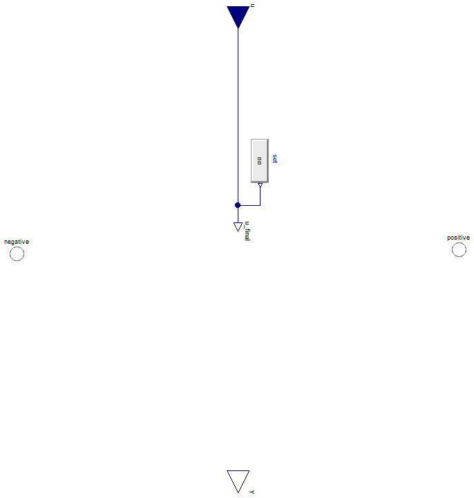

FCSys

Table of Contents
- User's Guide
- Blocks
- Conditions
- Assemblies
- Regions
- Subregions
- Phases
- Species
- Chemistry
- Connectors
- Characteristics
- Units
- Quantities
- Utilities
- Icons
Download
- Latest: v0.2.6 (2014-01-25)
FCSys.Conditions.ByConnector.ThermalDiffusive.Pair
Conditions for a pair of ThermalDiffusive connectorsInformation
Extends from Modelica.Icons.Package (Icon for standard packages).Package Content
| Name | Description |
|---|---|
| Specify heat flow rate (measure temperature) | |
| Specify temperature (measure heat flow rate) | |
| Base model for a thermal condition |
 FCSys.Conditions.ByConnector.ThermalDiffusive.Pair.HeatRate
Specify heat flow rate (measure temperature) Information
Extends from Partial (Base model for a thermal condition).
Parameters
| Type | Name | Default | Description |
|---|---|---|---|
| Specification | |||
| Boolean | internal | true | Use internal specification |
| RealExpression | set | redeclare Modelica.Blocks.So… | Source of internal specification |
| Measurement | |||
| RealOutput | y | positive.T - negative.T | Measurement expression |
Connectors
| Type | Name | Description |
|---|---|---|
| input RealInput | u | Value of specified condition |
| ThermalDiffusive | negative | Negative connector for thermal diffusion |
| ThermalDiffusive | positive | Positive connector for thermal diffusion |
| Measurement | ||
| output RealOutput | y | Measurement expression |
Modelica definition
model HeatRate "Specify heat flow rate (measure temperature)" extends Partial(final y=positive.T - negative.T); equation negative.Qdot = u_final; end HeatRate;
FCSys.Conditions.ByConnector.ThermalDiffusive.Pair.Temperature
Specify temperature (measure heat flow rate)Information
Extends from Partial (Base model for a thermal condition).
Parameters
| Type | Name | Default | Description |
|---|---|---|---|
| Specification | |||
| Boolean | internal | true | Use internal specification |
| RealExpression | set | redeclare Modelica.Blocks.So… | Source of internal specification |
| Measurement | |||
| RealOutput | y | negative.Qdot | Measurement expression |
Connectors
| Type | Name | Description |
|---|---|---|
| input RealInput | u | Value of specified condition |
| ThermalDiffusive | negative | Negative connector for thermal diffusion |
| ThermalDiffusive | positive | Positive connector for thermal diffusion |
| Measurement | ||
| output RealOutput | y | Measurement expression |
Modelica definition
model Temperature "Specify temperature (measure heat flow rate)" extends Partial(final y=negative.Qdot); equation positive.T - negative.T = u_final; end Temperature;
FCSys.Conditions.ByConnector.ThermalDiffusive.Pair.Partial
Base model for a thermal conditionInformation
Extends from FCSys.Icons.Conditions.PairShort (Short icon for a two-connector boundary condition).
Parameters
| Type | Name | Default | Description |
|---|---|---|---|
| Specification | |||
| Boolean | internal | true | Use internal specification |
| RealExpression | set | redeclare Modelica.Blocks.So… | Source of internal specification |
| Measurement | |||
| RealOutput | y | Measurement expression | |
Connectors
| Type | Name | Description |
|---|---|---|
| input RealInput | u | Value of specified condition |
| ThermalDiffusive | negative | Negative connector for thermal diffusion |
| ThermalDiffusive | positive | Positive connector for thermal diffusion |
| Measurement | ||
| output RealOutput | y | Measurement expression |
Modelica definition
partial model Partial "Base model for a thermal condition" extends FCSys.Icons.Conditions.PairShort; parameter Boolean internal=true "Use internal specification"; replaceable Modelica.Blocks.Sources.RealExpression set if internal constrainedby Modelica.Blocks.Interfaces.SO "Source of internal specification"; Connectors.RealInput u if not internal "Value of specified condition"; Connectors.RealOutput y "Measurement expression"; Connectors.ThermalDiffusive negative "Negative connector for thermal diffusion"; protected Connectors.RealOutputInternal u_final "Final value of specified condition"; public Connectors.ThermalDiffusive positive "Positive connector for thermal diffusion"; equation // Conservation of energy 0 = negative.Qdot + positive.Qdot; connect(u, u_final); connect(set.y, u_final); end Partial;